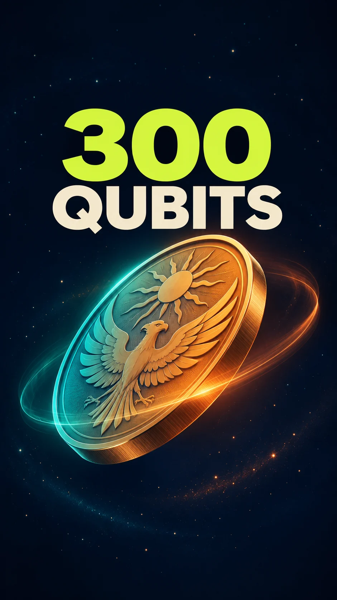
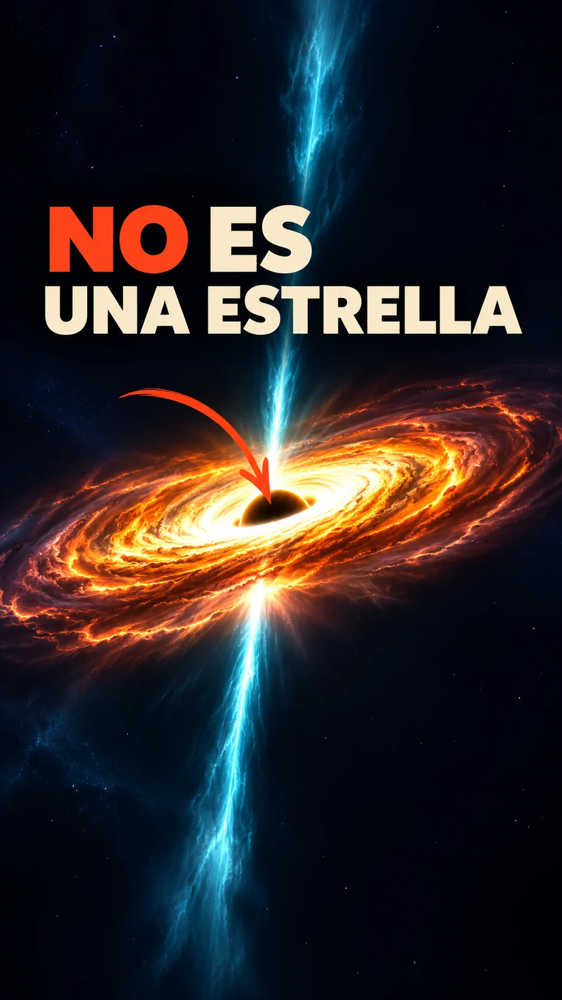
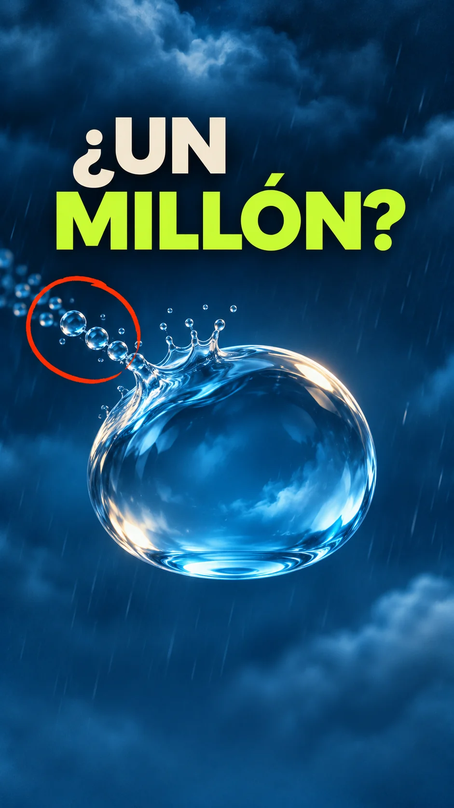
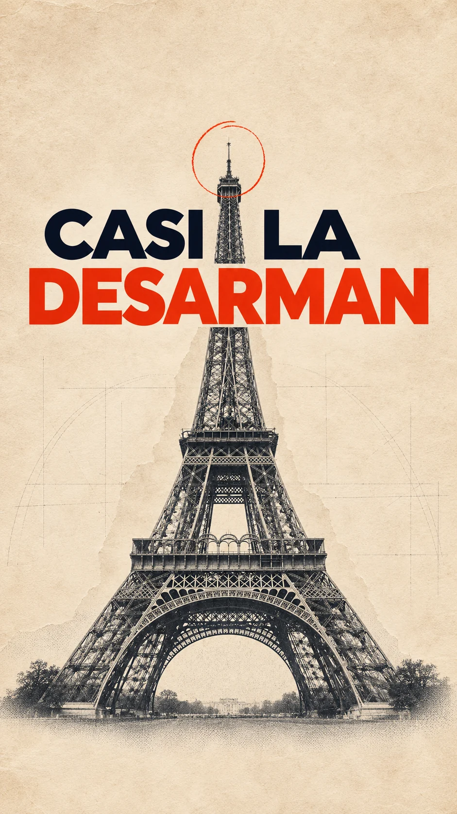
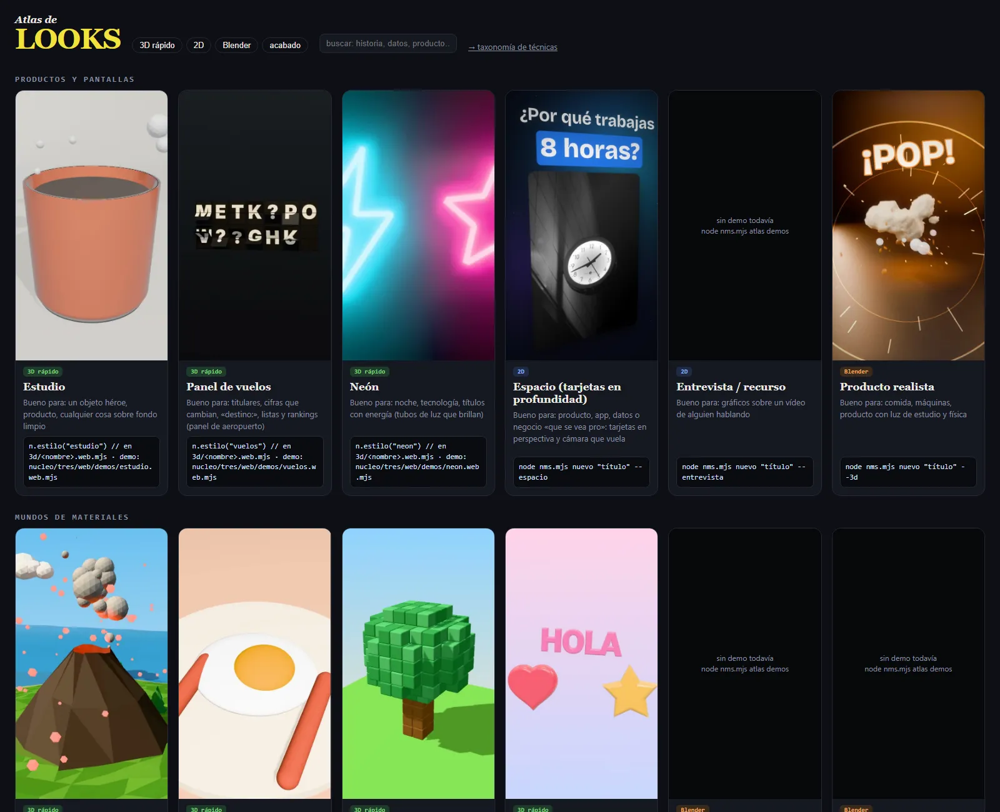

De la cereza a tu taza
editorial18 s
Dile qué quieres contar a Claude Code o Codex. Motion Studio le da las herramientas para crear el guion, la voz, la animación, la música y la portada en tu computadora.
Pago único · 12 meses de actualizaciones 7.x · CapCut Assistant de regalo
Actualizaciones y recursos. Puedes unirte aunque todavía no hayas comprado.
Mira lo que trae la 7 · 51 segundos
Este tráiler también se hizo con Motion Studio: el estudio de verdad, el cerebro eligiendo cada plano y los cortes al pulso de la música.
Hechos con la herramienta
Del motion editorial al 3D y los personajes. Dale play con sonido; estas muestras usan voz de ElevenLabs.
Desliza para ver los tres ejemplos →
Antes del primer segundo
Del tema a una pregunta visual. Siete ejemplos de Todo a Propósito, creados con IA y dirigidos para cada contenido. Abre una imagen para verla completa.

YouTube horizontal · 16:9
Una silla vacía, una chamarra y tres palabras. El concepto cambia con el tema: detalle, escala, mecanismo o una decisión.






Incluido para compradores
El asistente de portadas prepara prompts en tu computadora, sin conexión ni claves. La generación de la imagen se hace por separado, con tu propia cuenta de IA.
Tú diriges. Tu asistente lo construye.
Guion, voces y un plan de escenas. Revisas la propuesta antes de producir.
23 estilos, 39 looks y 152 técnicas para animar en 2D, 3D, mapas, documental y más.
Animación, textos, música, efectos y portada. Exporta el video y conserva su código.
1. Descarga y descomprime la carpeta. 2. Ábrela en Claude Code o Codex. 3. Pide tu primer video y revisa los avances.
Nuevo · el cerebro en vivo
Cuando tu IA empieza un video se abre sola una página en tu computadora: por cada frase del guion enseña qué tiene que lograr ese momento, la técnica que eligió de las 96 y por qué. Así aprendes dirección mientras haces videos, y puedes corregir antes de animar.
El cerebro
Una taxonomía del movimiento: para cada momento del guion (revelar, enfatizar, comparar, explicar, transicionar, sincronizar, situar) tu IA elige la técnica, sabe qué comunica y tiene el código listo. Cada técnica trae ejemplos reales con su segundo exacto. Por eso los vídeos no salen genéricos.

Atlas de looks
2D, 3D realista con Blender, 3D rápido sin Blender (sale en minutos y funciona sin tarjeta NVIDIA), mapas de cualquier país, documental, editorial, acuarela… y filtros de acabado como óleo, lápiz o papel recortado. Un atlas los enseña todos para elegir en segundos.

Estilos incluidos
Medido, no prometido
| Video | Duración | Render final |
|---|---|---|
| Persona 2D (borrador) | 18 s | 13 s |
| Documental de archivo: la torre | 33 s | ≈1 min |
| Solo 2D: datos y cifras | 30 s | 2 min |
| Imprenta: la olla exprés | 36 s | 18 min |
| Acuarela: un objeto en una mesa | 30 s | 23 min |
| Producto realista: palomitas | 30 s | 54 min |
En una computadora con NVIDIA RTX 4060. La herramienta mide la tuya en 2 minutos y te da esta tabla con tus tiempos. Hay cuatro niveles de calidad, de borrador rápido a «cine».
Lo que te llevas
Necesitas Claude Code o Codex; la cuenta o el consumo de IA se contrata por separado. Windows 10/11; Mac en fase experimental. Tu asistente instala las dependencias y Blender cuando el proyecto lo necesita.
Versión 7.0
Pago único. Los videos que hagas son tuyos y no pagas regalías.
Tarjetas mexicanas: elige MXN.
Pago seguro con tarjeta vía Stripe · ¿Dudas? oscar_8291@hotmail.com
¿Prefieres conocerla primero? Únete gratis a la comunidad de WhatsApp ↗
Comunidad abierta · WhatsApp
Actualizaciones de la aplicación, recursos gratis y resultados de la comunidad. Abierta a todos, con o sin compra.
Resuelve tus dudas
No. Trabajas conversando con Claude Code o Codex: el asistente escribe y ejecuta el código; tú das la idea, revisas los avances y decides. Motion Studio es una carpeta de herramientas y ejemplos que abres en ese asistente.
Puedes usar voz local con Chatterbox o tu propia grabación. Si eliges ElevenLabs u otro servicio de pago, usas tu propia cuenta y créditos. El asistente de portadas prepara prompts: las imágenes se generan por separado en el modelo que elijas, con sus condiciones.
Las personas generadas son dibujadas, mascotas u objetos con cara. Para personas reales, usa tu propia grabación y añade animaciones con el estilo de gráficos sobre video.
Exporta el video para llevarlo a tu editor. El bono CapCut Assistant permite a tu IA revisar proyectos de CapCut de escritorio y colocar animaciones en una copia de tu edición. El original se conserva; el bono funciona en Windows.
Sí. Puedes publicar los videos y usarlos en proyectos para clientes, sin regalías de Motion Studio. La licencia de la herramienta es personal: no puedes revenderla ni compartirla. Revisa también las condiciones de los recursos o servicios externos que uses.
Después de que Stripe confirme el pago, en menos de 24 horas te enviamos el enlace de descarga y la guía de instalación al correo o WhatsApp que dejaste al pagar.
Por ser un producto digital, no hay reembolsos una vez entregado. La excepción: si no logras instalarla y no podemos resolverlo juntos en 7 días, te devolvemos el 100%. Escríbenos a oscar_8291@hotmail.com.